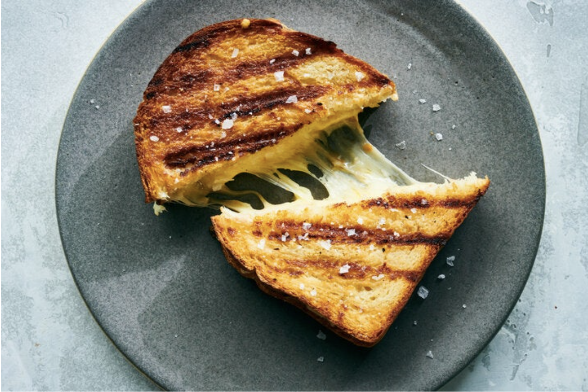

Odin Grilled Cheese
Grilled Cheese

Description
It's all about the crust. Choose a hearty bread, butter it up, and shred your favorite cheddar for the best grilled cheese ever: crispy-crunchy on the outside, melty, cheddar middle, and the world's most impressive cheese pull.
Ingredients
- C5 tbsp. butter, softened, divided
- 4 slices sourdough bread
- 2 c. shredded cheddar
Steps
- Shred the cheese. Using a box grater, shred the cheddar cheese you’ll be using for your sandwich.
- Butter the bread. Spread softened butter generously on the outer sides of each slice of bread.
- Grill. Place the bread, butter side down, on a pan over medium heat. Then top it with the shredded cheese, and finally the other slice of bread, butter side up. Allow it brown slightly before flipping, about 2-3 minutes on each side. Slice the grilled cheese sandwich and serve.